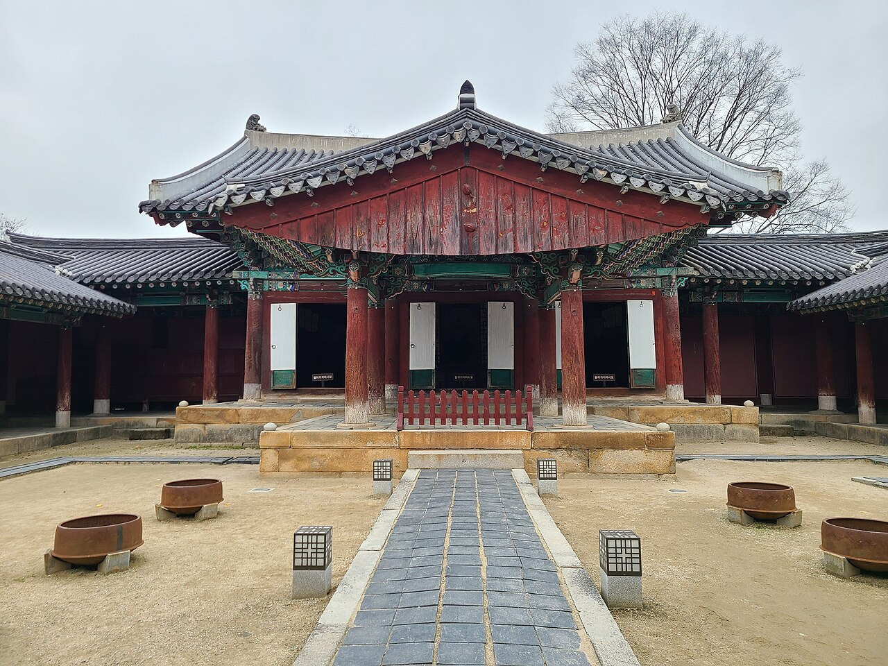
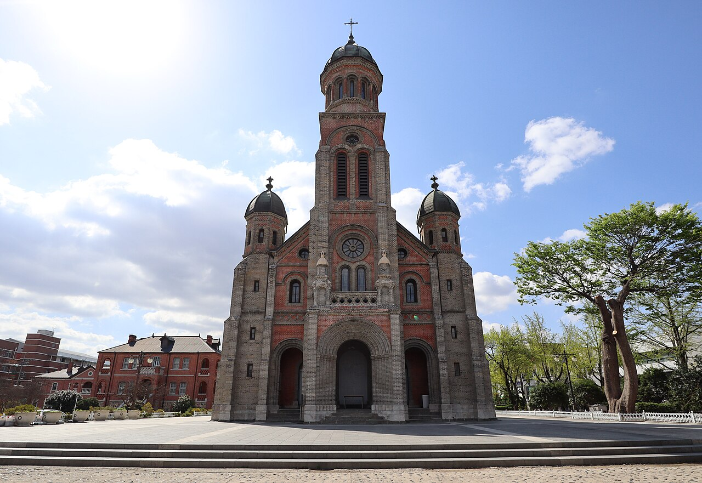
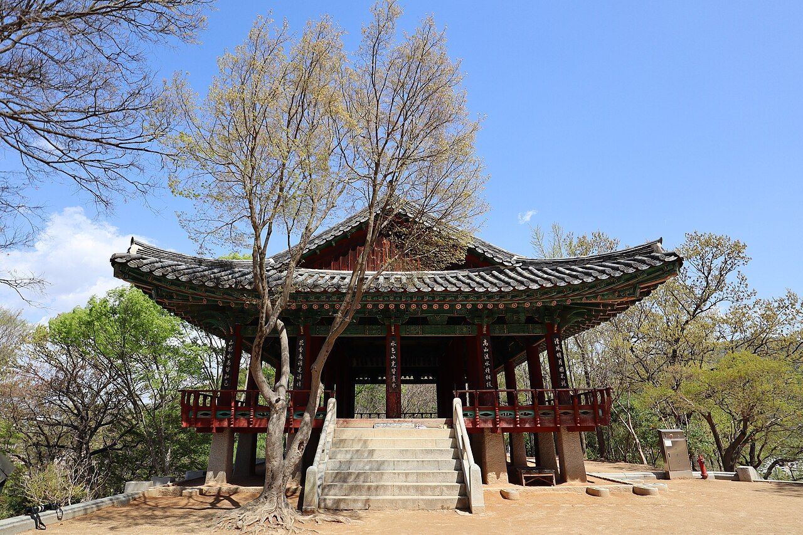
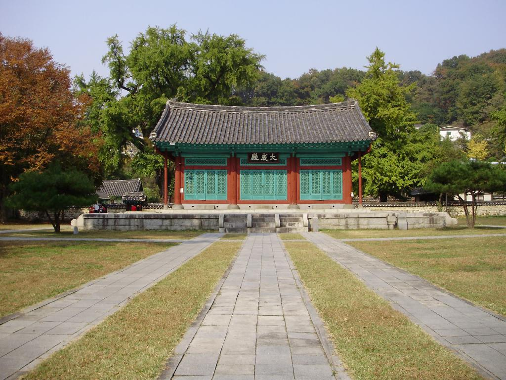
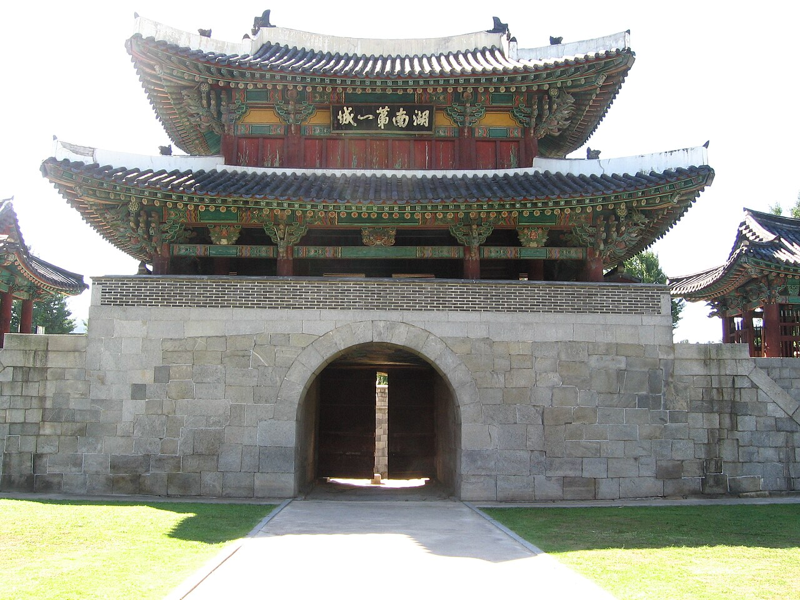
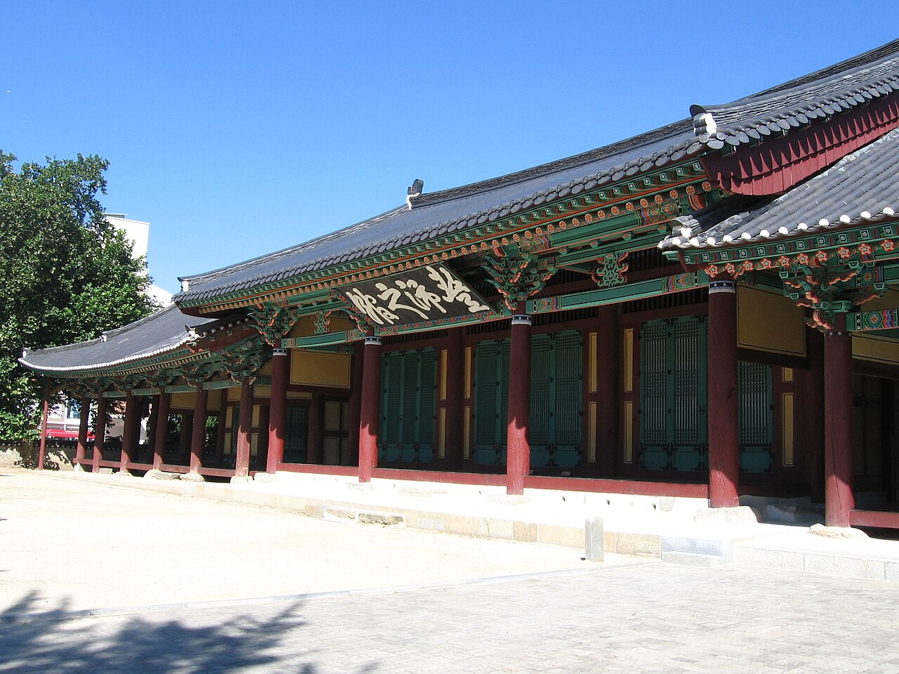
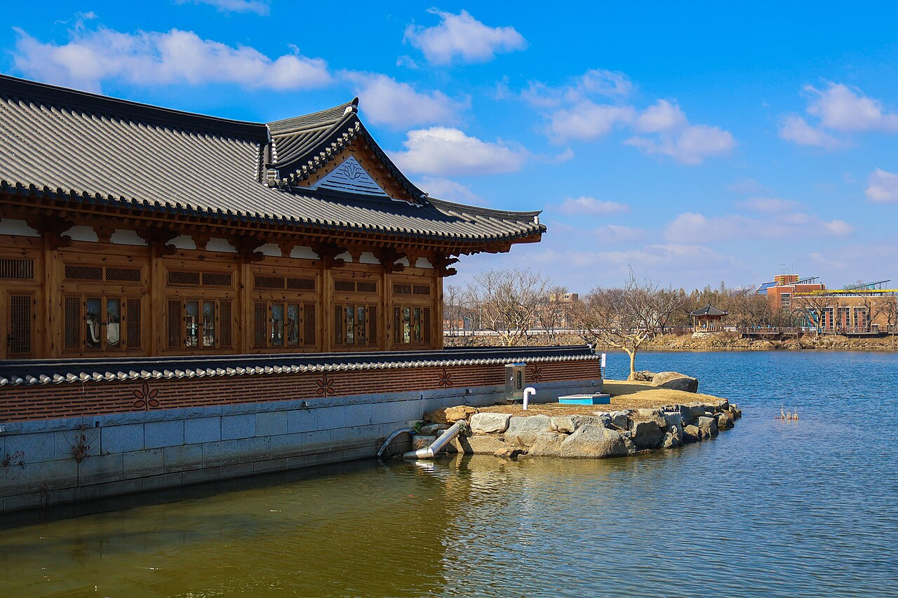
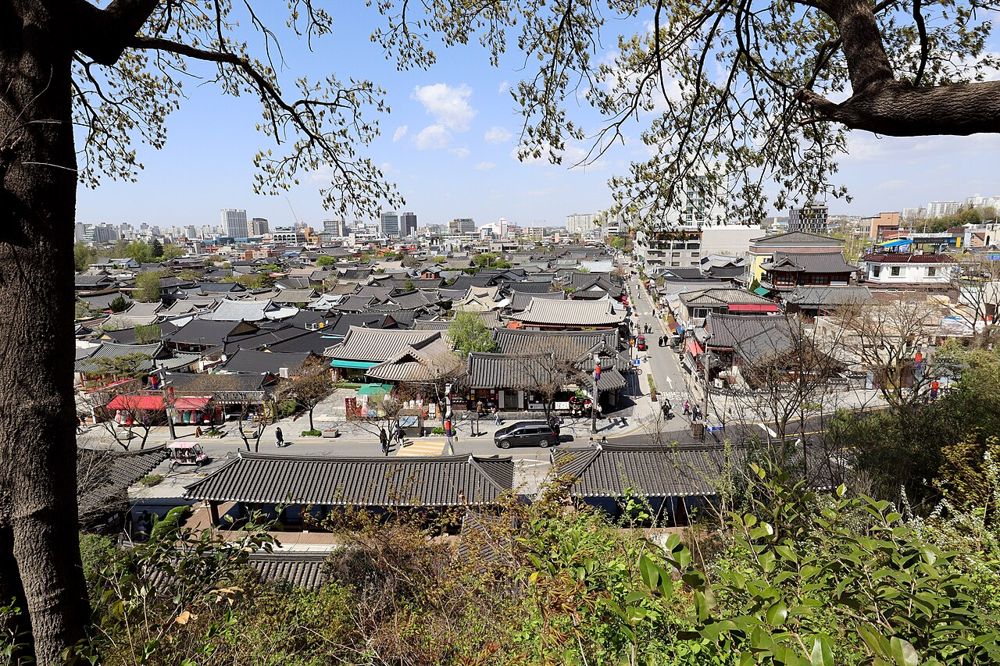

From Gyeonggijeon and Jeondong Cathedral to Nambu Night Market and Hanok Village alleys at night! Enjoy Jeonju's food and charm in a single day with our A · B · C courses.
Jeonju day trip in 3 courses: Hanok Village, Gyeonggijeon, Jeondong Cathedral, Nambu Market and night views. Pick the course that suits you below, and check each spot's highlights, suggested time, address and local tips.
🏯 Course A: Hanok Village & Joseon Dynasty History Course
⏱️ About 4–5 hours📍 About 2.5 km
Gyeonggijeon with King Taejo's portrait, red-brick Jeondong Cathedral and Omokdae overlooking hanok roofs
Suggested route: Gyeonggijeon Shrine → Jeondong Catholic Cathedral → Omokdae Pavilion & Jaman Mural Village
Joseon-era time amid a sea of 700 hanok roofs

The main hall of Gyeonggijeon, housing King Taejo's portrait
1. Gyeonggijeon Shrine
경기전 · Historic site / Royal culture
Gyeonggijeon was built in 1410 to enshrine the portrait of King Taejo (Yi Seong-gye), reflecting Jeonju's status as the ancestral home of the Joseon royal family (the Jeonju Yi clan). At the Royal Portrait Museum on the grounds you can see Taejo's portrait, a National Treasure, and the Jeonju Sago archive that once stored the Annals of the Joseon Dynasty has been restored. Its lush trees and bamboo paths make it popular with travelers taking photos in hanbok.
Suggested time
about 1 hour
Address
44 Taejo-ro, Wansan-gu, Jeonju, Jeonbuk
Travel tip
Wearing hanbok often gets you a discount on admission. Visit the bamboo path behind the main hall in the morning for quiet photos.

The front of Jeondong Cathedral in red brick and grey stone
2. Jeondong Catholic Cathedral
전동성당 · Modern architecture / Religious heritage
Jeondong Cathedral stands where Catholics were martyred during the persecutions of the late Joseon period. Construction began in 1908 and was completed in 1914. Its Romanesque style of red brick and grey granite, topped with rounded Byzantine bell towers, gives it an elegant look, and it is a designated national historic site. It stands right across from Gyeonggijeon, so it fits easily into a walk around Hanok Village.
Suggested time
about 30 minutes
Address
51 Taejo-ro, Wansan-gu, Jeonju, Jeonbuk
Travel tip
Interior visits are limited during Mass, so please be quiet. You can fit the whole cathedral in one shot from across the street on the Gyeonggijeon side.

Omokdae, a pavilion on the hill
3. Omokdae Pavilion & Jaman Mural Village
오목대 & 자만벽화마을 · Viewpoint / Mural alleys
Omokdae is said to be where Yi Seong-gye held a feast on his way back from victory at the Battle of Hwangsan in the late Goryeo period. A short climb reveals a sweeping view of Jeonju Hanok Village's tiled roofs rolling like waves. Cross the footbridge from Omokdae to reach Jaman Mural Village, where small hillside lanes are full of murals of fairy tales and characters and charming little cafés.
The joy of a meal in Jeonju, a UNESCO City of Gastronomy

The courtyard and Daeseongjeon hall lined with old trees
1. Jeonju Hyanggyo Confucian School
전주향교 · Traditional education / Ginkgo spot
Jeonju Hyanggyo was a Joseon-era institution that held rites for Confucius and other sages and educated local scholars. Old buildings like Daeseongjeon and Myeongnyundang remain intact, and the ginkgo trees in the courtyard, hundreds of years old, are especially famous. Legend says ginkgos were planted at schools because they resist insects, reminding students not to become "pests" to society. Its tranquil atmosphere has made it a location for many historical dramas.
Suggested time
about 40 minutes
Address
139 Hyanggyo-gil, Wansan-gu, Jeonju, Jeonbuk
Travel tip
It's most beautiful from late October to early November when the ginkgo leaves peak. Located at the eastern edge of Hanok Village, it's relatively quiet.

Pungnammun, the south gate of old Jeonju fortress
2. Pungnammun Gate & Nambu Market Youth Mall
풍남문 & 남부시장 청년몰 · Traditional market / Night market / Local food
Pungnammun is the only one of the four main gates of Joseon-era Jeonju fortress still standing and is designated a National Treasure (Bomul). Next to it, Nambu Market is Jeonju's best-known traditional market, where you can try local specialties like market-style kongnamul gukbap (bean-sprout rice soup) and blood sausage. Upstairs, the Youth Mall gathers small shops and cafés run by young merchants, and on weekend evenings a lively night market sells all kinds of street food.
The night market usually opens on Friday and Saturday evenings, so plan accordingly. Start your morning with market-style bean-sprout soup.

Jeonju Gaeksa with its "Pungpaejigwan" signboard
3. Jeonju Gaeksa & Gaekridan-gil
전주객사 & 객리단길 · Historic site / Café alleys
Jeonju Gaeksa housed a tablet symbolizing the king and lodged officials sent from the capital during the Joseon period; it is designated a National Treasure (Bomul). The "Pungpaejigwan" signboard on its main gate means "birthplace of the dynasty." The surrounding lanes, nicknamed "Gaekridan-gil" after Seoul's Gyeongridan-gil, are filled with cafés, restaurants and gift shops in renovated old buildings, popular with young travelers.
It's quieter than Hanok Village, great for a relaxed café tour. In the evening the alleys light up for an even nicer atmosphere.
🌙 Course C: Lotus Park & Hanok Village Night Walk Course
⏱️ About 5–6 hours📍 About 6.0 km
Deokjin Park's lotus lake, Hanok Village alleys and a hanok pavilion bridge over Jeonjucheon at night
Suggested route: Deokjin Park → Jeonju Hanok Village Alley Walk → Namcheongyo Bridge, Cheongyeonru Pavilion & Jeonjucheon
Softly lit hanok roofs and the night scenery of Jeonjucheon stream

Yeonhwajeong, a hanok library on the lake
1. Deokjin Park
덕진공원 · Lake park / Lotus spot
Deokjin Park is built around Deokjin Pond, said to date back to the Goryeo Dynasty. In summer, lotus flowers cover more than half of the lake in a spectacular display, and you can see them up close from Yeonhwa Bridge across the water. Yeonhwajeong, a hanok building on the lake, has been turned into a library where you can read while enjoying the lake view.
Suggested time
about 1 hour
Address
390 Gwonsamdeuk-ro, Deokjin-gu, Jeonju, Jeonbuk
Travel tip
Lotus flowers peak in July and August. Go early in the morning when the blossoms are fully open and the heat is milder.

Hanok Village roofs seen from the hill
2. Jeonju Hanok Village Alley Walk
전주한옥마을 골목 산책 · Hanok alleys / Street food
Jeonju Hanok Village grew from hanok houses built around the 1930s in Gyo-dong and Pungnam-dong and is now Jeonju's top attraction. Alleys branch off Taejo-ro and Eunhaeng-ro, with cafés, tea houses, craft workshops and souvenir shops in renovated hanok. Rent a hanbok to stroll the lanes or snack on street food as you go. After dark, soft lights in every alley create a completely different atmosphere.
It's very crowded during the day, so try walking the alleys in the evening. Continue to Namcheongyo's Cheongyeonru at the south end for a complete night walk.
Namcheongyo connects Jeonju Hanok Village with the other side of Jeonjucheon stream, and the hanok pavilion Cheongyeonru sits on top of it. Rest on the pavilion's wooden floor and gaze at the stream, the Hanok Village and the slopes of Namgosan in the distance — it's a favorite resting place for travelers. Walking paths run along the riverbanks, and after sunset lights on the pavilion and bridge create a soft night view.
You can take off your shoes and rest on Cheongyeonru's wooden floor. Stay from sunset until the lights come on to see both day and night views.
Opening hours, fees and access restrictions can change with the season and local conditions. Please check each place's official information before you visit.